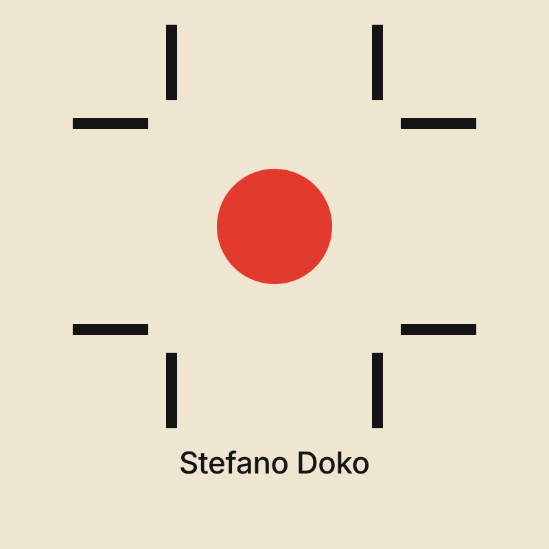
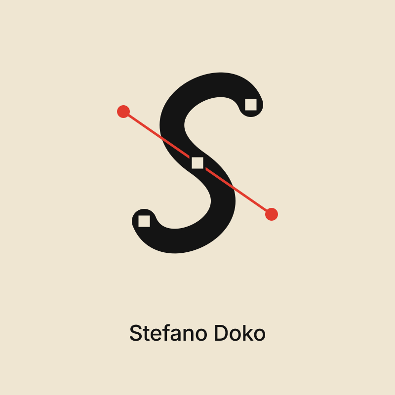
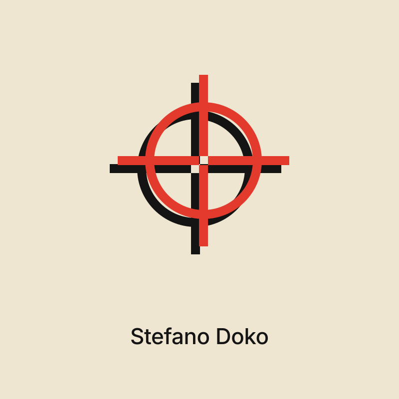
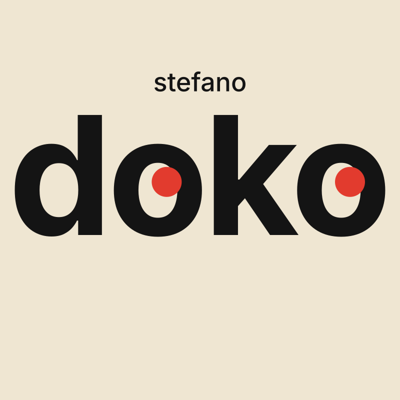
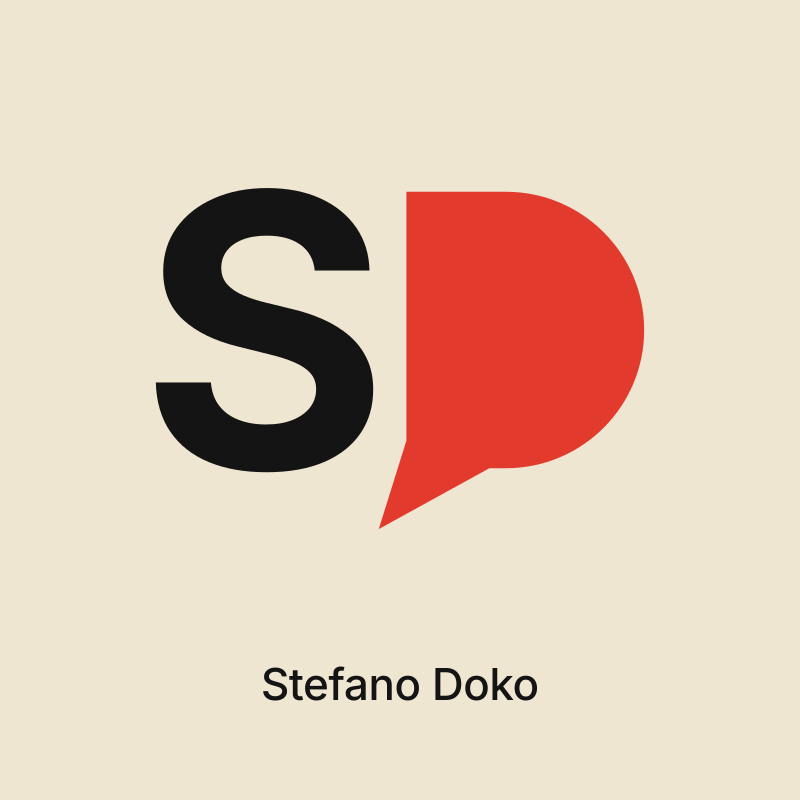
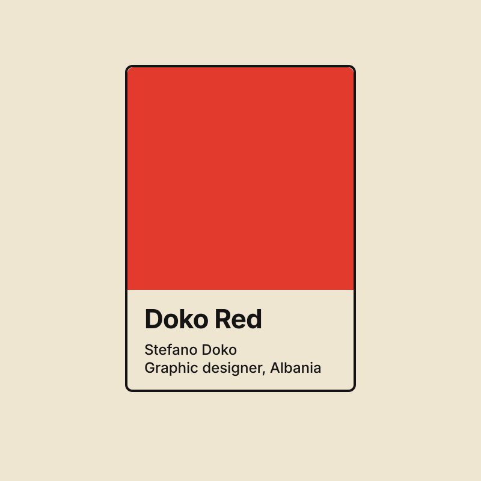
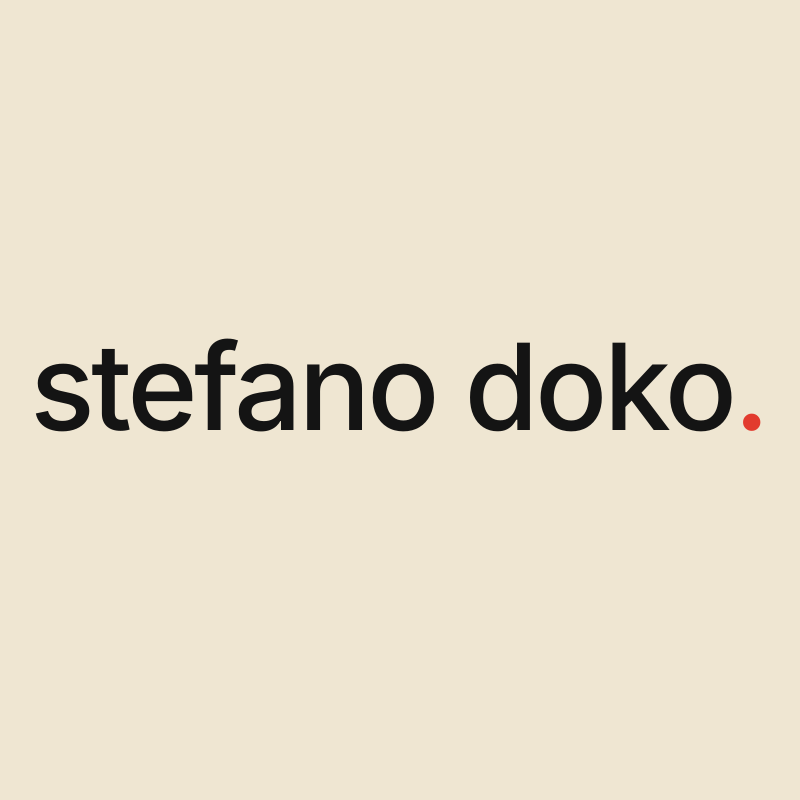
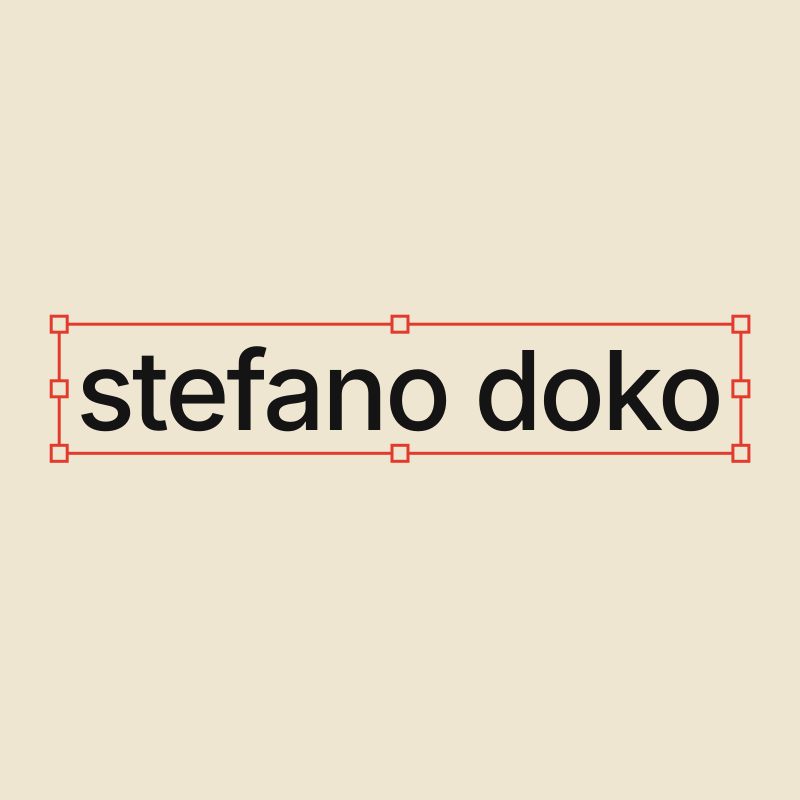
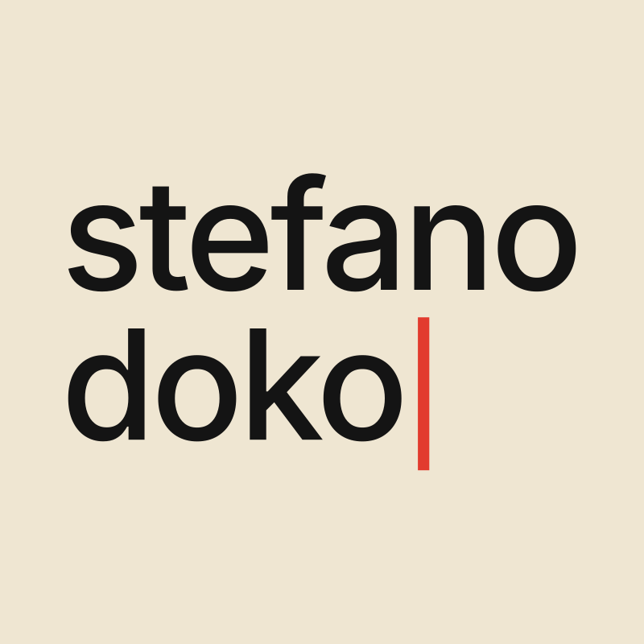

Stefano Dokov7 · nine marks, one idea eachAlbania
Sagi Haviv

Crop marks Framing what matters: the trim marks every print job starts with, around one red dot.
The path The S drawn as a vector path, anchors and one red handle showing: the tool is the mark.
Registration The printer’s mark, ink and red plates a hair out of register: made by hand, on purpose.Michael Bierut

Looking doko, and its two o’s are looking at you: a designer’s eye, literally.
Say it SD, and the D is a speech bubble: the whole site asks you to write to Stefano.
Doko Red A colour chip for a colour called Doko Red: his own red, named like an ink.Experimental Jetset

Full stop stefano doko. The red full stop is the only decoration: said, done.
Selected The name selected, as in every design app: the thing being worked on.
Typing The name still being typed, the cursor in red: always working.